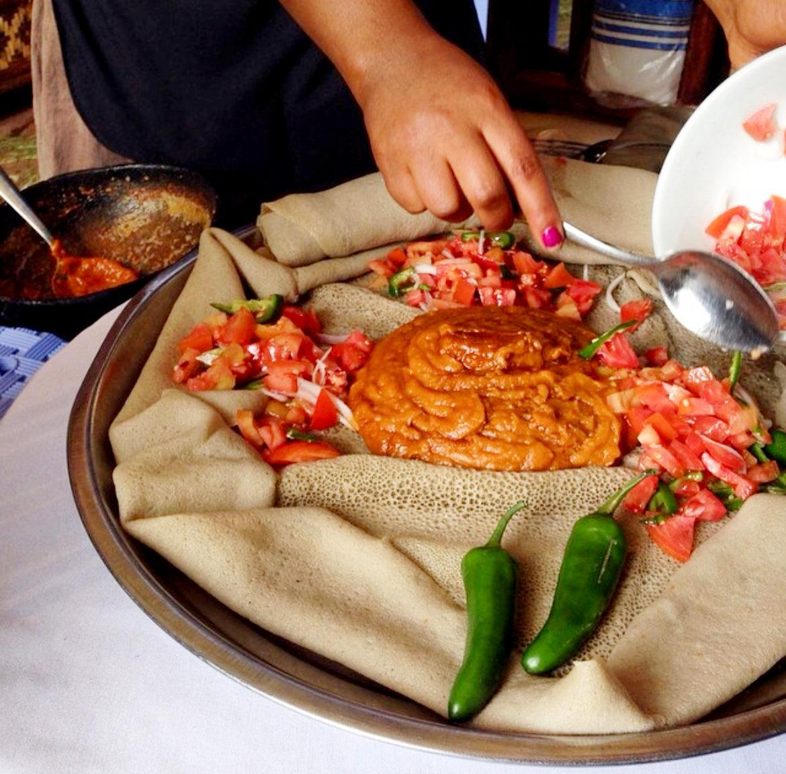

Shiro Wat

Description:
Shiro Wat is a popular Ethiopian vegetarian stew made from ground
chickpeas and spices. It is affordable, nutritious, and enjoyed throughout
Ethiopia.
Ingredients:
- 1 cup shiro powder
- 1 onion, finely chopped
- 2 cloves garlic, minced
- 2 tablespoons vegetable oil
- 3 cups water
- 1 tablespoon berbere spice
- Salt to taste
Steps:
- Heat oil in a pot and sauté the onion until golden.
- Add garlic and berbere spice.
- Pour in water and bring to a gentle boil.
- Pour in water and bring to a gentle boil.
- Cook for 15–20 minutes until thick and smooth.
- Add salt to taste.
- Serve hot with Injera.